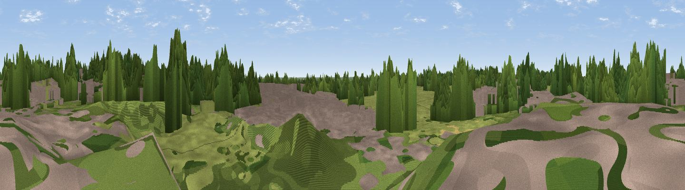

Poringland Heath
#43622 in England · top 33% of its area beats it · near Framingham EarlWhere it is
The exact computed spot (TG 26202 02603). Click the marker for map links.
The view, rendered

A 360° render of this exact spot computed from the terrain model, tree cover and land cover — summer colours, afternoon light, calibrated against photographs of famous viewpoints. Real trees, hedges and buildings will differ in detail.
The panorama
Grey silhouette: terrain skyline in each direction (720 bearings, Earth curvature and refraction included). Dashed green: skyline with trees (+15 m) and buildings (+8 m) as obstacles. Blue strip: how far the ground is visible on each bearing.
Where the view opens
Wedge length = distance to the farthest visible ground on that bearing (vegetation-aware). Rings at 10, 25 and 50 km.
What fills the view
37% grassland · 27% woodland · 23% built-up · 13% cropland
Angular shares of the visible panorama (visual magnitude), not map area. Landscape diversity 0.57 (0–1 Shannon).
Key numbers
More beautiful places nearby
The staircase of upgrades: each row has a higher view potential than everything closer. Driving times are estimates from straight-line distance, calibrated against real road routing — check an actual route before setting out.
| Place | Direction | Drive | Score |
|---|---|---|---|
| Viewpoint near Norwich | NNW · 6 km | ~13 min | 21.1 |
| Strumpshaw Hill | ENE · 10 km | ~20 min | 22.4 |
| Viewpoint near Burgh Castle | E · 21 km | ~36 min | 32.7 |
| Viewpoint near Great Yarmouth | E · 28 km | ~44 min | 33.4 |
| Viewpoint near Paston | NNE · 34 km | ~52 min | 56.1 |
| Viewpoint near Mundesley | NNE · 34 km | ~52 min | 58.9 |
| Viewpoint near Trimingham | N · 36 km | ~54 min | 62.4 |
| Viewpoint near Sidestrand | N · 37 km | ~56 min | 65.3 |
52.57417, 1.33681 · source: dobih hill · position refined by local search. Computed location — check access rights before visiting.